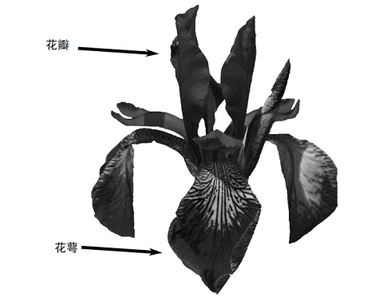

 <!DOCTYPE HTML>
<html lang="zh-CN">
<head><meta name="generator" content="Hexo 3.8.0">
  <meta charset="UTF-8">
  
    <title>Python机器学习基础教程（1）:引言 | 成华的个人博客</title>
    <meta name="viewport" content="width=device-width, initial-scale=1,user-scalable=no">
    
    <meta name="author" content="Cheng Hua">
    

    
    <meta name="description" content="机器学习所能解决的问题 监督学习用户将成堆的输入和预期的输出提供给算法，算法会找到一种方法，根据给定的输入给出相应的输出。  监督学习实例   识别信封上手写的邮政编码 基于医学影像判断肿瘤是否为良性 检测信用卡交易中的诈骗行为  无监督学习只有输入数据是已知的，没有为算法提供输出。  无监督学习实例   确定一篇博客的主题 将客户分成具有相似偏好的群组 检测网站的异常访问模式。  数据的每一">
<meta name="keywords" content="machine-learning">
<meta property="og:type" content="article">
<meta property="og:title" content="Python机器学习基础教程（1）:引言">
<meta property="og:url" content="http://dayAndnight2018.github.io/2019/02/13/2019021302/index.html">
<meta property="og:site_name" content="成华的个人博客">
<meta property="og:description" content="机器学习所能解决的问题 监督学习用户将成堆的输入和预期的输出提供给算法，算法会找到一种方法，根据给定的输入给出相应的输出。  监督学习实例   识别信封上手写的邮政编码 基于医学影像判断肿瘤是否为良性 检测信用卡交易中的诈骗行为  无监督学习只有输入数据是已知的，没有为算法提供输出。  无监督学习实例   确定一篇博客的主题 将客户分成具有相似偏好的群组 检测网站的异常访问模式。  数据的每一">
<meta property="og:locale" content="zh-CN">
<meta property="og:image" content="http://dayandnight2018.github.io/2019/02/13/2019021302/2019021302_flower.png">
<meta property="og:updated_time" content="2019-02-13T15:55:29.557Z">
<meta name="twitter:card" content="summary">
<meta name="twitter:title" content="Python机器学习基础教程（1）:引言">
<meta name="twitter:description" content="机器学习所能解决的问题 监督学习用户将成堆的输入和预期的输出提供给算法，算法会找到一种方法，根据给定的输入给出相应的输出。  监督学习实例   识别信封上手写的邮政编码 基于医学影像判断肿瘤是否为良性 检测信用卡交易中的诈骗行为  无监督学习只有输入数据是已知的，没有为算法提供输出。  无监督学习实例   确定一篇博客的主题 将客户分成具有相似偏好的群组 检测网站的异常访问模式。  数据的每一">
<meta name="twitter:image" content="http://dayandnight2018.github.io/2019/02/13/2019021302/2019021302_flower.png">

    
    <link rel="alternative" href="/atom.xml" title="成华的个人博客" type="application/atom+xml">
    
    
    <link rel="icon" href="/img/favicon.ico">
    
    
    <link rel="apple-touch-icon" href="/img/jacman.jpg">
    <link rel="apple-touch-icon-precomposed" href="/img/jacman.jpg">
    
    <link rel="stylesheet" href="/css/style.css">
</head>
</html>
  <body>
    <header>
      
<div>
		
			<div id="imglogo">
				<a href="/"></a>
			</div>
			
			<div id="textlogo">
				<h1 class="site-name"><a href="/" title="成华的个人博客">成华的个人博客</a></h1>
				<h2 class="blog-motto">爱生活，爱编程</h2>
			</div>
			<div class="navbar"><a class="navbutton navmobile" href="#" title="菜单">
			</a></div>
			<nav class="animated">
				<ul>
					<ul>
					 
						<li><a href="/">首页</a></li>
					
						<li><a href="/archives">归档</a></li>
					
						<li><a href="/tags">标签</a></li>
					
						<li><a href="/categories">分类</a></li>
					
					<li>
 					
					<form class="search" action="//google.com/search" method="get" accept-charset="utf-8">
						<label>Search</label>
						<input type="search" id="search" name="q" autocomplete="off" maxlength="20" placeholder="搜索">
						<input type="hidden" name="q" value="site:dayAndnight2018.github.io">
					</form>
					
					</li>
				</ul>
			</ul></nav>			
</div>
    </header>
    <div id="container">
      <div id="main" class="post" itemscope="" itemprop="blogPost">
  
	<article itemprop="articleBody"> 
		<header class="article-info clearfix">
  <h1 itemprop="name">
    
      <a href="/2019/02/13/2019021302/" title="Python机器学习基础教程（1）:引言" itemprop="url">Python机器学习基础教程（1）:引言</a>
  </h1>
  <p class="article-author">By
       
		<a href="/about" title="Cheng Hua" target="_blank" itemprop="author">Cheng Hua</a>
		
  </p><p class="article-time">
    <time datetime="2019-02-13T13:17:47.000Z" itemprop="datePublished"> 发表于 2019-02-13</time>
    
  </p>
</header>
	<div class="article-content">
		
		<a id="more"></a>
<blockquote>
<h2 id="机器学习所能解决的问题"><a href="#机器学习所能解决的问题" class="headerlink" title="机器学习所能解决的问题"></a>机器学习所能解决的问题</h2></blockquote>
<p><div><span style="color: dodgerblue;font-size: 25px; font-family: '宋体';font-weight:bold; background:silver;padding:5px 10px;border-radius:10px">监督学习</span></div><br>用户将成堆的输入和预期的输出提供给算法，算法会找到一种方法，根据给定的输入给出相应的输出。</p>
<blockquote>
<p>监督学习实例</p>
</blockquote>
<ol>
<li>识别信封上手写的邮政编码</li>
<li>基于医学影像判断肿瘤是否为良性</li>
<li>检测信用卡交易中的诈骗行为</li>
</ol>
<p><div><span style="color: dodgerblue;font-size: 25px; font-family: '宋体';font-weight:bold; background:silver;padding:5px 10px;border-radius:10px">无监督学习</span></div><br>只有输入数据是已知的，没有为算法提供输出。</p>
<blockquote>
<p>无监督学习实例</p>
</blockquote>
<ol>
<li>确定一篇博客的主题</li>
<li>将客户分成具有相似偏好的群组</li>
<li>检测网站的异常访问模式。</li>
</ol>
<p>数据的每一行称为一个<code>样本</code>，每一列称为一个<code>特征</code></p>
<blockquote>
<h2 id="熟悉任务和数据"><a href="#熟悉任务和数据" class="headerlink" title="熟悉任务和数据"></a>熟悉任务和数据</h2></blockquote>
<p>在使用机器学习算法前，需要思考以下问题：</p>
<ol>
<li>我的问题是什么？我所拥有的数据能否回答这个问题？</li>
<li>哪种算法最适合解决我的问题？</li>
<li>我提取了哪些特征？这些特征能够正确的预测结果？</li>
<li>如何衡量是否成功应用了算法？</li>
</ol>
<blockquote>
<h2 id="选择合适的工具"><a href="#选择合适的工具" class="headerlink" title="选择合适的工具"></a>选择合适的工具</h2></blockquote>
<ol>
<li>首选<code>Python</code>语言</li>
<li><code>scikit-learn</code>:包含许多先进的机器学习算法</li>
<li><code>Anaconda</code>:包含<code>Jupyter Notebook</code>(浏览器python语言解释器)、<code>NumPy</code>(科学计算)、<code>SciPy</code>（科学计算）、<code>matplotlib</code>（绘图工具）、<code>pandas</code>（数据提取）</li>
</ol>
<blockquote>
<h2 id="第一个应用：鸢尾花分类"><a href="#第一个应用：鸢尾花分类" class="headerlink" title="第一个应用：鸢尾花分类"></a>第一个应用：鸢尾花分类</h2></blockquote>
<p>假设我们采集了很多鸢尾花花瓣长度、宽度，花萼的长度、宽度（单位：厘米）,并且还有一些数据直到每朵花的种类：setosa、versicolor、virginica<br></p>
<blockquote>
<p>目标 : 构建一个机器学习模型，预测新的鸢尾花的种类</p>
</blockquote>
<p>由于我们预先知道这些花的种类（必定是三种中的一种），所以这是一个<code>监督问题</code>。</p>
<p>我们要在已知的setosa、versicolor、virginica三种品种中确定一种，所以这是一个<code>分类问题</code>。</p>
<p>所有可能的输出：setosa、versicolor、virginica都叫做<code>类别</code>。</p>
<p>数据集中的每朵鸢尾花都属于三个类别之一，所以这是一个<code>三分类问题</code>。</p>
<p>我们的目的就是为未知品种的花确定它的品种，品种这个属性就是这条数据的<code>标签</code>。</p>
<blockquote>
<p>初识数据</p>
</blockquote>
<ol>
<li>鸢尾花数据集包含在scikit-learn的datasets模块中，可以调用load-iris函数加载数据:</li>
</ol>
<figure class="highlight plain"><table><tr><td class="gutter"><pre><span class="line">1</span><br><span class="line">2</span><br><span class="line">3</span><br><span class="line">4</span><br></pre></td><td class="code"><pre><span class="line">#加载load_iris函数</span><br><span class="line">from sklearn.datasets import load_iris</span><br><span class="line">#加载数据</span><br><span class="line">iris_dataset = load_iris()</span><br></pre></td></tr></table></figure>
<ol start="2">
<li>load_iris函数返回的是一个Bunch对象，与对象类似，包含键和值：</li>
</ol>
<figure class="highlight plain"><table><tr><td class="gutter"><pre><span class="line">1</span><br></pre></td><td class="code"><pre><span class="line">print(&quot;Keys of iris_dataset: \n&#123;&#125;&quot;.format(iris_dataset.keys()))</span><br></pre></td></tr></table></figure>
<p><code>输出显示 &gt;&gt;</code></p>
<figure class="highlight plain"><table><tr><td class="gutter"><pre><span class="line">1</span><br><span class="line">2</span><br></pre></td><td class="code"><pre><span class="line">Keys of iris_dataset:</span><br><span class="line">dict_keys([&apos;target_names&apos;, &apos;feature_names&apos;, &apos;DESCR&apos;, &apos;data&apos;, &apos;target&apos;])</span><br></pre></td></tr></table></figure>
<ol start="3">
<li>DESCR是一些描述文字</li>
</ol>
<figure class="highlight plain"><table><tr><td class="gutter"><pre><span class="line">1</span><br></pre></td><td class="code"><pre><span class="line">print(iris_dataset[&apos;DESCR&apos;][:193] + &quot;\n...&quot;)</span><br></pre></td></tr></table></figure>
<p><code>输出显示 &gt;&gt;</code></p>
<figure class="highlight plain"><table><tr><td class="gutter"><pre><span class="line">1</span><br><span class="line">2</span><br><span class="line">3</span><br><span class="line">4</span><br><span class="line">5</span><br><span class="line">6</span><br><span class="line">7</span><br><span class="line">8</span><br><span class="line">9</span><br></pre></td><td class="code"><pre><span class="line">Iris Plants Database</span><br><span class="line">====================</span><br><span class="line">Notes</span><br><span class="line">----</span><br><span class="line">Data Set Characteristics:</span><br><span class="line">:Number of Instances: 150 (50 in each of three classes)</span><br><span class="line">:Number of Attributes: 4 numeric, predictive att</span><br><span class="line">...</span><br><span class="line">----</span><br></pre></td></tr></table></figure>
<ol start="4">
<li>target_names是花的品种</li>
</ol>
<figure class="highlight plain"><table><tr><td class="gutter"><pre><span class="line">1</span><br></pre></td><td class="code"><pre><span class="line">print(&quot;Target names: &#123;&#125;&quot;.format(iris_dataset[&apos;target_names&apos;]))</span><br></pre></td></tr></table></figure>
<p><code>输出显示 &gt;&gt;</code></p>
<figure class="highlight plain"><table><tr><td class="gutter"><pre><span class="line">1</span><br></pre></td><td class="code"><pre><span class="line">Target names: [&apos;setosa&apos; &apos;versicolor&apos; &apos;virginica&apos;]</span><br></pre></td></tr></table></figure>
<ol start="5">
<li>feature_names 键对应的值是一个字符串列表，对每一个特征进行了说明</li>
</ol>
<figure class="highlight plain"><table><tr><td class="gutter"><pre><span class="line">1</span><br></pre></td><td class="code"><pre><span class="line">print(&quot;Feature names: \n&#123;&#125;&quot;.format(iris_dataset[&apos;feature_names&apos;]))</span><br></pre></td></tr></table></figure>
<p><code>输出显示 &gt;&gt;</code></p>
<figure class="highlight plain"><table><tr><td class="gutter"><pre><span class="line">1</span><br><span class="line">2</span><br><span class="line">3</span><br></pre></td><td class="code"><pre><span class="line">Feature names:</span><br><span class="line">[&apos;sepal length (cm)&apos;, &apos;sepal width (cm)&apos;, &apos;petal length (cm)&apos;,</span><br><span class="line">&apos;petal width (cm)&apos;]</span><br></pre></td></tr></table></figure>
<ol start="6">
<li>数据存在data数组中，每一行是一朵花，每一列是一种属性值</li>
</ol>
<figure class="highlight plain"><table><tr><td class="gutter"><pre><span class="line">1</span><br></pre></td><td class="code"><pre><span class="line">print(&quot;Shape of data: &#123;&#125;&quot;.format(iris_dataset[&apos;data&apos;].shape))</span><br></pre></td></tr></table></figure>
<p><code>输出显示 &gt;&gt;</code></p>
<figure class="highlight plain"><table><tr><td class="gutter"><pre><span class="line">1</span><br></pre></td><td class="code"><pre><span class="line">Shape of data: (150, 4)</span><br></pre></td></tr></table></figure>
<p>打印前五条数据</p>
<figure class="highlight plain"><table><tr><td class="gutter"><pre><span class="line">1</span><br></pre></td><td class="code"><pre><span class="line">print(&quot;First five rows of data:\n&#123;&#125;&quot;.format(iris_dataset[&apos;data&apos;][:5]))</span><br></pre></td></tr></table></figure>
<p><code>输出显示 &gt;&gt;</code></p>
<figure class="highlight plain"><table><tr><td class="gutter"><pre><span class="line">1</span><br><span class="line">2</span><br><span class="line">3</span><br><span class="line">4</span><br><span class="line">5</span><br><span class="line">6</span><br></pre></td><td class="code"><pre><span class="line">First five rows of data:</span><br><span class="line">[[ 5.1 3.5 1.4 0.2]</span><br><span class="line">[ 4.9 3. 1.4 0.2]</span><br><span class="line">[ 4.7 3.2 1.3 0.2]</span><br><span class="line">[ 4.6 3.1 1.5 0.2]</span><br><span class="line">[ 5. 3.6 1.4 0.2]]</span><br></pre></td></tr></table></figure>
<ol start="7">
<li>target数组是每朵花的品种shape（150,）</li>
</ol>
<figure class="highlight plain"><table><tr><td class="gutter"><pre><span class="line">1</span><br></pre></td><td class="code"><pre><span class="line">print(&quot;Shape of target: &#123;&#125;&quot;.format(iris_dataset[&apos;target&apos;].shape))</span><br></pre></td></tr></table></figure>
<p><code>输出显示 &gt;&gt;</code></p>
<figure class="highlight plain"><table><tr><td class="gutter"><pre><span class="line">1</span><br></pre></td><td class="code"><pre><span class="line">Shape of target: (150,)</span><br></pre></td></tr></table></figure>
<p>品种被映射到0-2：0 代表 setosa， 1 代表 versicolor，2 代表 virginica</p>
<figure class="highlight plain"><table><tr><td class="gutter"><pre><span class="line">1</span><br></pre></td><td class="code"><pre><span class="line">print(&quot;Target:\n&#123;&#125;&quot;.format(iris_dataset[&apos;target&apos;]))</span><br></pre></td></tr></table></figure>
<p><code>输出显示 &gt;&gt;</code></p>
<figure class="highlight plain"><table><tr><td class="gutter"><pre><span class="line">1</span><br><span class="line">2</span><br><span class="line">3</span><br><span class="line">4</span><br><span class="line">5</span><br><span class="line">6</span><br></pre></td><td class="code"><pre><span class="line">Target:</span><br><span class="line">[0 0 0 0 0 0 0 0 0 0 0 0 0 0 0 0 0 0 0 0 0 0 0 0 0 0 0 0 0 0 0 0 0 0 0 0 0</span><br><span class="line">0 0 0 0 0 0 0 0 0 0 0 0 0 1 1 1 1 1 1 1 1 1 1 1 1 1 1 1 1 1 1 1 1 1 1 1 1</span><br><span class="line">1 1 1 1 1 1 1 1 1 1 1 1 1 1 1 1 1 1 1 1 1 1 1 1 1 1 2 2 2 2 2 2 2 2 2 2 2</span><br><span class="line">2 2 2 2 2 2 2 2 2 2 2 2 2 2 2 2 2 2 2 2 2 2 2 2 2 2 2 2 2 2 2 2 2 2 2 2 2</span><br><span class="line">2 2]</span><br></pre></td></tr></table></figure>
<blockquote>
<p>如何衡量模型好坏？</p>
</blockquote>
<p>我们不能使用我们训练模型的数据来判断模型的好坏，需要根据我们没有用过的数据集，并且知道标签的数据进行判断模型能否正确预测结果。</p>
<p>我们把数据集划分成两部分，一部分用来训练模型，叫<code>训练数据</code>；另外一部分用来衡量模型的好坏，叫<code>测试数据</code>.</p>
<p>scikit-learn的train_test_split函数可以按照<code>75%</code>和<code>25%</code>比例划分训练集和测试集。</p>
<p>scikit-learn用<code>X</code>表示输入，<code>y</code>表示输出（标签）</p>
<p>使用train_test_split函数划分训练集和测试集：</p>
<figure class="highlight plain"><table><tr><td class="gutter"><pre><span class="line">1</span><br><span class="line">2</span><br><span class="line">3</span><br><span class="line">4</span><br></pre></td><td class="code"><pre><span class="line">#从sklearn.model_selection导入train_test_split函数</span><br><span class="line">from sklearn.model_selection import train_test_split</span><br><span class="line">#random_state=0指定了随机种子，保证多次运行本函数可以得到相同的输出</span><br><span class="line">X_train, X_test, y_train, y_test = train_test_split(iris_dataset[&apos;data&apos;], iris_dataset[&apos;target&apos;], random_state=0)</span><br></pre></td></tr></table></figure>
<blockquote>
<p>使用散点图观察数据</p>
</blockquote>
<figure class="highlight plain"><table><tr><td class="gutter"><pre><span class="line">1</span><br><span class="line">2</span><br><span class="line">3</span><br><span class="line">4</span><br><span class="line">5</span><br><span class="line">6</span><br></pre></td><td class="code"><pre><span class="line"># 利用X_train中的数据创建DataFrame</span><br><span class="line"># 利用iris_dataset.feature_names中的字符串对数据列进行标记</span><br><span class="line">iris_dataframe = pd.DataFrame(X_train, columns=iris_dataset.feature_names)</span><br><span class="line"># 利用DataFrame创建散点图矩阵，按y_train着色</span><br><span class="line">grr = pd.scatter_matrix(iris_dataframe, c=y_train, figsize=(15, 15), marker=&apos;o&apos;,</span><br><span class="line">hist_kwds=&#123;&apos;bins&apos;: 20&#125;, s=60, alpha=.8, cmap=mglearn.cm3)</span><br></pre></td></tr></table></figure>
<blockquote>
<p>构建第一个模型：K近邻</p>
</blockquote>
<p>选择与待预测数据距离最近的K=1的数据的类型代替。</p>
<p>k 近邻分类算法是在 neighbors 模块的 KNeighborsClassifier 类中实现的。我们需要将这个类实例化为一个对象，然后才能使用这个模型。</p>
<figure class="highlight plain"><table><tr><td class="gutter"><pre><span class="line">1</span><br><span class="line">2</span><br><span class="line">3</span><br><span class="line">4</span><br></pre></td><td class="code"><pre><span class="line">#导入KNeighborsClassifier</span><br><span class="line">from sklearn.neighbors import KNeighborsClassifier</span><br><span class="line">#初始化对象，K=1</span><br><span class="line">knn = KNeighborsClassifier(n_neighbors=1)</span><br></pre></td></tr></table></figure>
<p>输入训练集：</p>
<figure class="highlight plain"><table><tr><td class="gutter"><pre><span class="line">1</span><br></pre></td><td class="code"><pre><span class="line">knn.fit(X_train, y_train)</span><br></pre></td></tr></table></figure>
<p>输入待预测数据：</p>
<figure class="highlight plain"><table><tr><td class="gutter"><pre><span class="line">1</span><br></pre></td><td class="code"><pre><span class="line">X_new = np.array([[5, 2.9, 1, 0.2]])</span><br></pre></td></tr></table></figure>
<p>调用predict函数进行预测：</p>
<figure class="highlight plain"><table><tr><td class="gutter"><pre><span class="line">1</span><br><span class="line">2</span><br><span class="line">3</span><br></pre></td><td class="code"><pre><span class="line">prediction = knn.predict(X_new)</span><br><span class="line">print(&quot;Prediction: &#123;&#125;&quot;.format(prediction))</span><br><span class="line">print(&quot;Predicted target name: &#123;&#125;&quot;.format(iris_dataset[&apos;target_names&apos;][prediction]))</span><br></pre></td></tr></table></figure>
<p><code>输出显示 &gt;&gt;</code></p>
<figure class="highlight plain"><table><tr><td class="gutter"><pre><span class="line">1</span><br><span class="line">2</span><br></pre></td><td class="code"><pre><span class="line">Prediction: [0]</span><br><span class="line">Predicted target name: [&apos;setosa&apos;]</span><br></pre></td></tr></table></figure>
<blockquote>
<p>评估模型</p>
</blockquote>
<p>对测试集中每一个数据进行预测，对预测精度进行评测：</p>
<figure class="highlight plain"><table><tr><td class="gutter"><pre><span class="line">1</span><br><span class="line">2</span><br><span class="line">3</span><br></pre></td><td class="code"><pre><span class="line">#预测测试集中的数据</span><br><span class="line">y_pred = knn.predict(X_test)</span><br><span class="line">print(&quot;Test set predictions:\n &#123;&#125;&quot;.format(y_pred))</span><br></pre></td></tr></table></figure>
<p><code>输出显示 &gt;&gt;</code></p>
<figure class="highlight plain"><table><tr><td class="gutter"><pre><span class="line">1</span><br><span class="line">2</span><br></pre></td><td class="code"><pre><span class="line">Test set predictions:</span><br><span class="line">[2 1 0 2 0 2 0 1 1 1 2 1 1 1 1 0 1 1 0 0 2 1 0 0 2 0 0 1 1 0 2 1 0 2 2 1 0 2]</span><br></pre></td></tr></table></figure>
<figure class="highlight plain"><table><tr><td class="gutter"><pre><span class="line">1</span><br><span class="line">2</span><br></pre></td><td class="code"><pre><span class="line">#查看准确度</span><br><span class="line">print(&quot;Test set score: &#123;:.2f&#125;&quot;.format(np.mean(y_pred == y_test)))</span><br></pre></td></tr></table></figure>
<p><code>输出显示 &gt;&gt;</code></p>
<figure class="highlight plain"><table><tr><td class="gutter"><pre><span class="line">1</span><br></pre></td><td class="code"><pre><span class="line">Test set score: 0.97</span><br></pre></td></tr></table></figure>
<p>也可以使用knn的score函数：</p>
<figure class="highlight plain"><table><tr><td class="gutter"><pre><span class="line">1</span><br></pre></td><td class="code"><pre><span class="line">print(&quot;Test set score: &#123;:.2f&#125;&quot;.format(knn.score(X_test, y_test)))</span><br></pre></td></tr></table></figure>
<p><code>输出显示 &gt;&gt;</code></p>
<figure class="highlight plain"><table><tr><td class="gutter"><pre><span class="line">1</span><br></pre></td><td class="code"><pre><span class="line">Test set score: 0.97</span><br></pre></td></tr></table></figure>
<blockquote>
<h2 id="小结"><a href="#小结" class="headerlink" title="小结"></a>小结</h2></blockquote>
<p>总结一下本章所学的内容。我们首先简要介绍了机器学习及其应用，然后讨论了监督学习和无监督学习之间的区别，并简要介绍了本书将会用到的工具。随后，我们构思了一项任务，要利用鸢尾花的物理测量数据来预测其品种。我们在构建模型时用到了由专家标注过的测量数据集，专家已经给出了花的正确品种，因此这是一个监督学习问题。一共有三个品种： setosa、 versicolor 或 virginica，因此这是一个三分类问题。在分类问题中，可能的品种被称为类别（class），每朵花的品种被称为它的标签（label）。<br>鸢尾花（Iris）数据集包含两个 NumPy 数组：一个包含数据，在 scikit-learn 中被称为 X；一个包含正确的输出或预期输出，被称为 y。数组 X 是特征的二维数组，每个数据点对应一行，每个特征对应一列。数组 y 是一维数组，里面包含一个类别标签，对每个样本都是一个 0 到 2 之间的整数。<br>我们将数据集分成训练集（training set）和测试集（test set），前者用于构建模型，后者用于评估模型对前所未见的新数据的泛化能力。<br>我们选择了 k 近邻分类算法，根据新数据点在训练集中距离最近的邻居来进行预测。该算法在KNeighborsClassifier 类中实现，里面既包含构建模型的算法，也包含利用模型进行预测的算法。我们将类实例化，并设定参数。然后调用 fit 方法来构建模型，传入训练数据（X_train）和训练输出（y_trian）作为参数。我们用 score 方法来评估模型，该方法计算的是模型精度。我们将 score 方法用于测试集数据和测试集标签，得出模型的精度约为 97%，也就是说，该模型在测试集上 97% 的预测都是正确的。这让我们有信心将模型应用于新数据（在我们的例子中是新花的测量数据），并相信模型在约 97% 的情况下都是正确的。</p>
<p>所有代码：</p>
<figure class="highlight plain"><table><tr><td class="gutter"><pre><span class="line">1</span><br><span class="line">2</span><br><span class="line">3</span><br><span class="line">4</span><br><span class="line">5</span><br></pre></td><td class="code"><pre><span class="line">X_train, X_test, y_train, y_test = train_test_split(</span><br><span class="line">iris_dataset[&apos;data&apos;], iris_dataset[&apos;target&apos;], random_state=0)</span><br><span class="line">knn = KNeighborsClassifier(n_neighbors=1)</span><br><span class="line">knn.fit(X_train, y_train)</span><br><span class="line">print(&quot;Test set score: &#123;:.2f&#125;&quot;.format(knn.score(X_test, y_test)))</span><br></pre></td></tr></table></figure>
<p><code>输出显示 &gt;&gt;</code></p>
<figure class="highlight plain"><table><tr><td class="gutter"><pre><span class="line">1</span><br></pre></td><td class="code"><pre><span class="line">Test set score: 0.97</span><br></pre></td></tr></table></figure>
<p>这个代码片段包含了应用 scikit-learn 中任何机器学习算法的核心代码。 fit、 predict 和score 方法是 scikit-learn 监督学习模型中最常用的接口。学完本章介绍的概念，你可以将这些模型应用到许多机器学习任务上。下一章，我们会更深入地介绍 scikit-learn 中各种类型的监督学习模型，以及这些模型的正确使用方法。</p>
  
	</div>
		<footer class="article-footer clearfix">
<div class="article-catetags">

<div class="article-categories">
  <span></span>
  <a class="article-category-link" href="/categories/machine-learning/">machine-learning</a>
</div>


  <div class="article-tags">
  
  <span></span> <a href="/tags/machine-learning/">machine-learning</a>
  </div>

</div>


	<div class="article-share" id="share">
	
	  <div data-url="http://dayAndnight2018.github.io/2019/02/13/2019021302/" data-title="Python机器学习基础教程（1）:引言 | 成华的个人博客" data-tsina="" class="share clearfix">
	  </div>
	
	</div>


</footer>

   	       
	</article>
	
<nav class="article-nav clearfix">
 

<div class="next">
<a href="/2019/02/13/2019021301/" title="JAVA1234部分资源">
 <strong>下一篇：</strong><br> 
 <span>JAVA1234部分资源
</span>
</a>
</div>

</nav>

	


</div>  
      <div class="openaside"><a class="navbutton" href="#" title="显示侧边栏"></a></div>

  <div id="toc" class="toc-aside">
  <strong class="toc-title">文章目录</strong>
 
 <ol class="toc"><li class="toc-item toc-level-2"><a class="toc-link" href="#机器学习所能解决的问题"><span class="toc-number">1.</span> <span class="toc-text">机器学习所能解决的问题</span></a></li><li class="toc-item toc-level-2"><a class="toc-link" href="#熟悉任务和数据"><span class="toc-number">2.</span> <span class="toc-text">熟悉任务和数据</span></a></li><li class="toc-item toc-level-2"><a class="toc-link" href="#选择合适的工具"><span class="toc-number">3.</span> <span class="toc-text">选择合适的工具</span></a></li><li class="toc-item toc-level-2"><a class="toc-link" href="#第一个应用：鸢尾花分类"><span class="toc-number">4.</span> <span class="toc-text">第一个应用：鸢尾花分类</span></a></li><li class="toc-item toc-level-2"><a class="toc-link" href="#小结"><span class="toc-number">5.</span> <span class="toc-text">小结</span></a></li></ol>
 
  </div>

<div id="asidepart">
<div class="closeaside"><a class="closebutton" href="#" title="隐藏侧边栏"></a></div>
<aside class="clearfix">

  
<div class="github-card">
<p class="asidetitle">Github 名片</p>
<div class="github-card" data-github="dayAndnight2018" data-theme="medium"></div>
<script type="text/javascript" src="//cdn.jsdelivr.net/github-cards/latest/widget.js"></script>
</div>


  
<div class="categorieslist">
	<p class="asidetitle">分类</p>
		<ul>
		
		  
			<li><a href="/categories/blog/" title="blog">blog<sup>1</sup></a></li>
		  
		
		  
			<li><a href="/categories/machine-learning/" title="machine-learning">machine-learning<sup>1</sup></a></li>
		  
		
		  
			<li><a href="/categories/resource/" title="resource">resource<sup>2</sup></a></li>
		  
		
		</ul>
</div>


  
<div class="tagslist">
	<p class="asidetitle">标签</p>
		<ul class="clearfix">
		
			
				<li><a href="/tags/resource/" title="resource">resource<sup>2</sup></a></li>
			
		
			
				<li><a href="/tags/blog/" title="blog">blog<sup>1</sup></a></li>
			
		
			
				<li><a href="/tags/machine-learning/" title="machine-learning">machine-learning<sup>1</sup></a></li>
			
		
		</ul>
</div>


  <div class="linkslist">
  <p class="asidetitle">友情链接</p>
    <ul>
        
          <li>
            
            	<a href="http://www.java1234.com" target="_blank" title="一个JAVA资源丰富的站点">JAVA社区</a>
            
          </li>
        
          <li>
            
            	<a href="http://www.jb51.net" target="_blank" title="一个电子书资源站点">JB51论坛</a>
            
          </li>
        
          <li>
            
            	<a href="http://www.allitebooks.com" target="_blank" title="一个英文电子书站点">Allitebooks</a>
            
          </li>
        
    </ul>
</div>

  


  <div class="rsspart">
	<a href="/atom.xml" target="_blank" title="rss">RSS 订阅</a>
</div>

  <div class="weiboshow">
  <p class="asidetitle">新浪微博</p>
    <iframe width="100%" height="119" class="share_self" frameborder="0" scrolling="no" src="http://widget.weibo.com/weiboshow/index.php?language=&width=0&height=119&fansRow=2&ptype=1&speed=0&skin=9&isTitle=1&noborder=1&isWeibo=0&isFans=0&uid=&verifier=b3593ceb&dpc=1"></iframe>
</div>


</aside>
</div>
    </div>
    <footer><div id="footer">
	
	<div class="line">
		<span></span>
		<div class="author"></div>
	</div>
	
	
	<section class="info">
		<p> 决定成功的是你自己 <br>
			Start，and stick.</p>
	</section>
	 
	<div class="social-font">
		
		
		<a href="https://github.com/dayAndnight2018" target="_blank" class="icon-github" title="github"></a>
		
		
		
		
		
		
		
		
		
	</div>
			
		

		<p class="copyright">
		Powered by <a href="http://hexo.io" target="_blank" title="hexo">hexo</a> and Theme by <a href="https://github.com/wuchong/jacman" target="_blank" title="Jacman">Jacman</a> © 2019 
		
		<a href="/about" target="_blank" title="Cheng Hua">Cheng Hua</a>
		
		
		</p>
</div>
</footer>
    <script src="/js/jquery-2.0.3.min.js"></script>
<script src="/js/jquery.imagesloaded.min.js"></script>
<script src="/js/gallery.js"></script>
<script src="/js/jquery.qrcode-0.12.0.min.js"></script>

<script type="text/javascript">
$(document).ready(function(){ 
  $('.navbar').click(function(){
    $('header nav').toggleClass('shownav');
  });
  var myWidth = 0;
  function getSize(){
    if( typeof( window.innerWidth ) == 'number' ) {
      myWidth = window.innerWidth;
    } else if( document.documentElement && document.documentElement.clientWidth) {
      myWidth = document.documentElement.clientWidth;
    };
  };
  var m = $('#main'),
      a = $('#asidepart'),
      c = $('.closeaside'),
      o = $('.openaside');
  c.click(function(){
    a.addClass('fadeOut').css('display', 'none');
    o.css('display', 'block').addClass('fadeIn');
    m.addClass('moveMain');
  });
  o.click(function(){
    o.css('display', 'none').removeClass('beforeFadeIn');
    a.css('display', 'block').removeClass('fadeOut').addClass('fadeIn');      
    m.removeClass('moveMain');
  });
  $(window).scroll(function(){
    o.css("top",Math.max(80,260-$(this).scrollTop()));
  });
  
        getSize();
        if (myWidth >= 1024) {
          c.click();
        }
  
  $(window).resize(function(){
    getSize(); 
    if (myWidth >= 1024) {
      $('header nav').removeClass('shownav');
    }else{
      m.removeClass('moveMain');
      a.css('display', 'block').removeClass('fadeOut');
      o.css('display', 'none');
      
      $('#toc.toc-aside').css('display', 'none');
        
    }
  });
});
</script>

<script type="text/javascript">
$(document).ready(function(){ 
  var ai = $('.article-content>iframe'),
      ae = $('.article-content>embed'),
      t  = $('#toc'),
      ta = $('#toc.toc-aside'),
      o  = $('.openaside'),
      c  = $('.closeaside');
  if(ai.length>0){
    ai.wrap('<div class="video-container" />');
  };
  if(ae.length>0){
   ae.wrap('<div class="video-container" />');
  };
  c.click(function(){
    ta.css('display', 'block').addClass('fadeIn');
  });
  o.click(function(){
    ta.css('display', 'none');
  });
  $(window).scroll(function(){
    ta.css("top",Math.max(140,320-$(this).scrollTop()));
  });
});
</script>


<script type="text/javascript">
$(document).ready(function(){ 
  var $this = $('.share'),
      url = $this.attr('data-url'),
      encodedUrl = encodeURIComponent(url),
      title = $this.attr('data-title'),
      tsina = $this.attr('data-tsina'),
      description = $this.attr('description');
  var html = [
  '<div class="hoverqrcode clearfix"></div>',
  '<a class="overlay" id="qrcode"></a>',
  '<a href="https://www.facebook.com/sharer.php?u=' + encodedUrl + '" class="article-share-facebook" target="_blank" title="Facebook"></a>',
  '<a href="https://twitter.com/intent/tweet?url=' + encodedUrl + '" class="article-share-twitter" target="_blank" title="Twitter"></a>',
  '<a href="#qrcode" class="article-share-qrcode" title="微信"></a>',
  '<a href="http://widget.renren.com/dialog/share?resourceUrl=' + encodedUrl + '&srcUrl=' + encodedUrl + '&title=' + title +'" class="article-share-renren" target="_blank" title="人人"></a>',
  '<a href="http://service.weibo.com/share/share.php?title='+title+'&url='+encodedUrl +'&ralateUid='+ tsina +'&searchPic=true&style=number' +'" class="article-share-weibo" target="_blank" title="微博"></a>',
  '<span title="Share to"></span>'
  ].join('');
  $this.append(html);

  $('.hoverqrcode').hide();

  var myWidth = 0;
  function updatehoverqrcode(){
    if( typeof( window.innerWidth ) == 'number' ) {
      myWidth = window.innerWidth;
    } else if( document.documentElement && document.documentElement.clientWidth) {
      myWidth = document.documentElement.clientWidth;
    };
    var qrsize = myWidth > 1024 ? 200:100;
    var options = {render: 'image', size: qrsize, fill: '#2ca6cb', text: url, radius: 0.5, quiet: 1};
    var p = $('.article-share-qrcode').position();
    $('.hoverqrcode').empty().css('width', qrsize).css('height', qrsize)
                          .css('left', p.left-qrsize/2+20).css('top', p.top-qrsize-10)
                          .qrcode(options);
  };
  $(window).resize(function(){
    $('.hoverqrcode').hide();
  });
  $('.article-share-qrcode').click(function(){
    updatehoverqrcode();
    $('.hoverqrcode').toggle();
  });
  $('.article-share-qrcode').hover(function(){}, function(){
      $('.hoverqrcode').hide();
  });
});   
</script>


<link rel="stylesheet" href="/fancybox/jquery.fancybox.css" media="screen" type="text/css">
<script src="/fancybox/jquery.fancybox.pack.js"></script>
<script type="text/javascript">
$(document).ready(function(){ 
  $('.article-content').each(function(i){
    $(this).find('img').each(function(){
      if ($(this).parent().hasClass('fancybox')) return;
      var alt = this.alt;
      if (alt) $(this).after('<span class="caption">' + alt + '</span>');
      $(this).wrap('<a href="' + this.src + '" title="' + alt + '" class="fancybox"></a>');
    });
    $(this).find('.fancybox').each(function(){
      $(this).attr('rel', 'article' + i);
    });
  });
  if($.fancybox){
    $('.fancybox').fancybox();
  }
}); 
</script>


<!-- Analytics Begin -->


<script>
var _hmt = _hmt || [];
(function() {
  var hm = document.createElement("script");
  hm.src = "//hm.baidu.com/hm.js?e6d1f421bbc9962127a50488f9ed37d1";
  var s = document.getElementsByTagName("script")[0]; 
  s.parentNode.insertBefore(hm, s);
})();
</script>


<!-- Analytics End -->

<!-- Totop Begin -->

	<div id="totop">
	<a title="返回顶部"></a>
	</div>
	<script src="/js/totop.js"></script>

<!-- Totop End -->

<!-- MathJax Begin -->
<!-- mathjax config similar to math.stackexchange -->


<!-- MathJax End -->

<!-- Tiny_search Begin -->

<!-- Tiny_search End -->

  </body>
</html>
